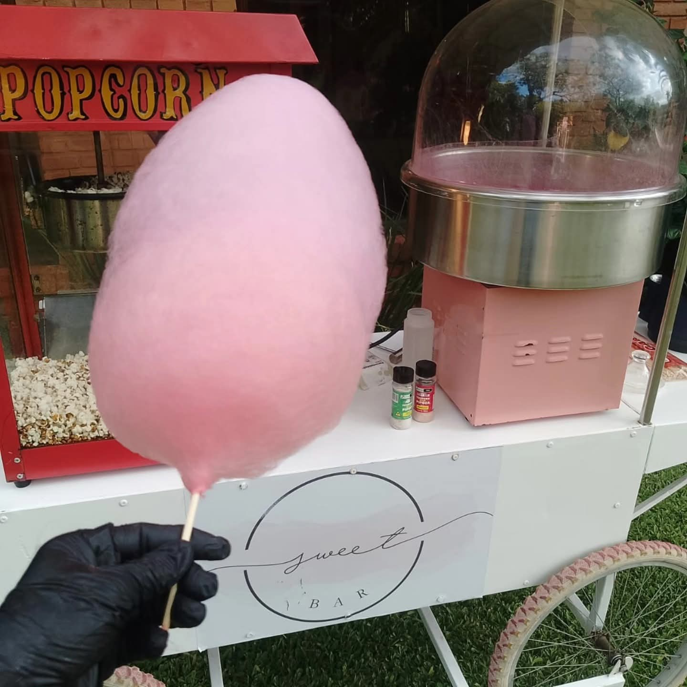
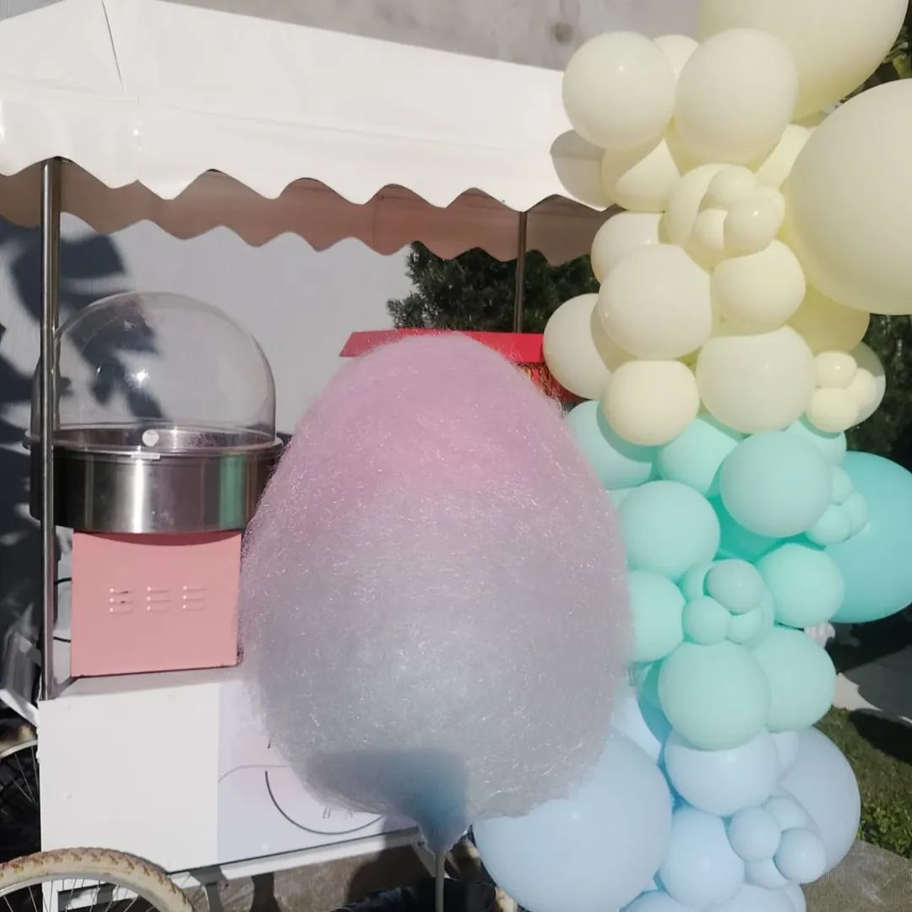
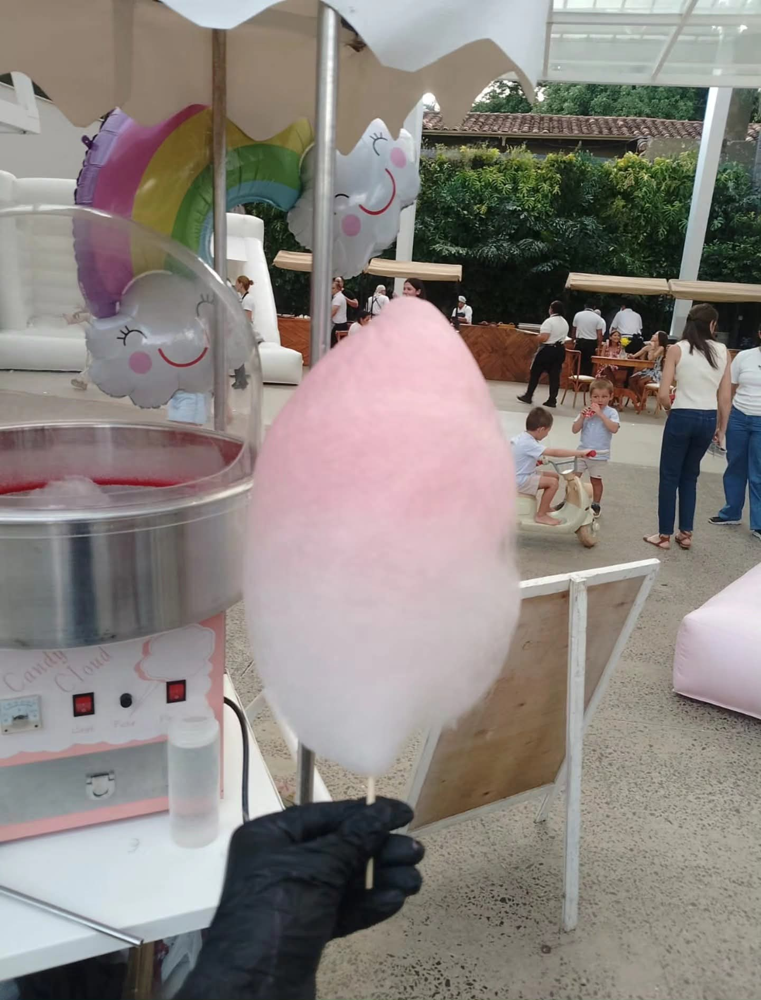
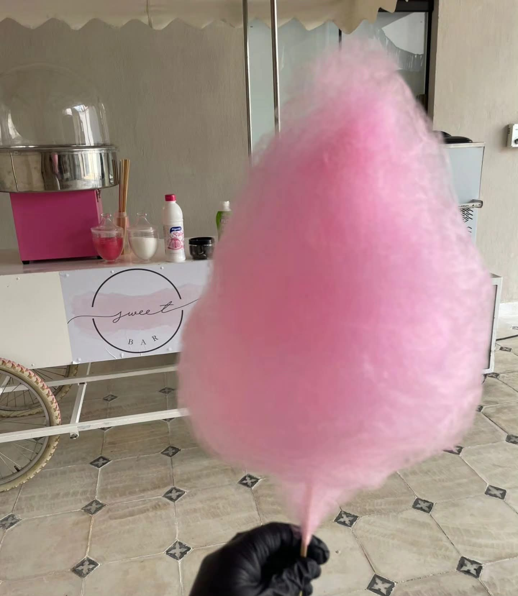
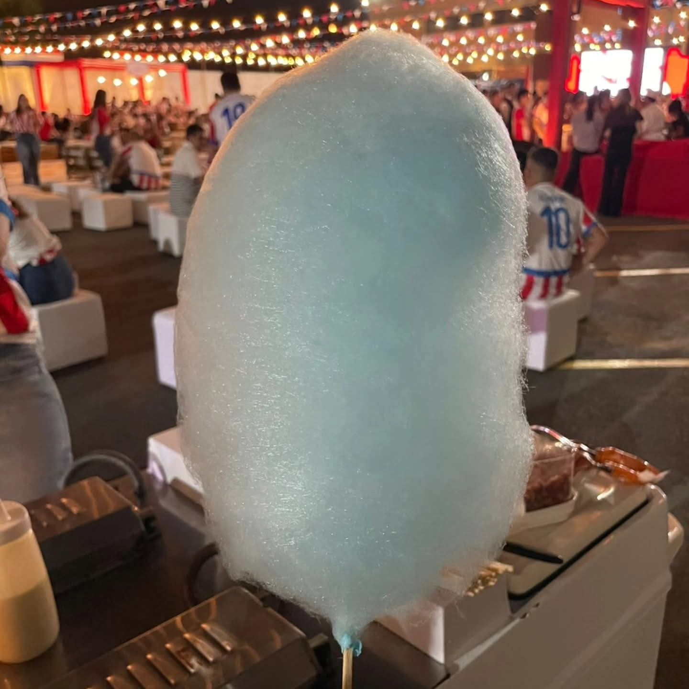
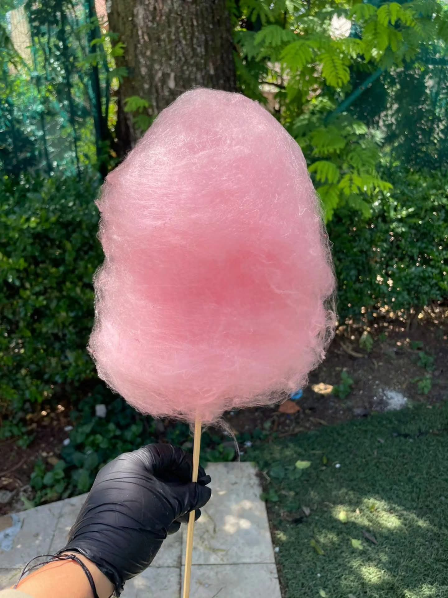

Toque mágico e instagrameable: Su apariencia esponjosa y colorida cautiva todas las miradas y es el favorito para fotos inolvidables.
Sabor nostálgico: Un dulce que transporta a grandes y chicos a sus mejores recuerdos, garantizando sonrisas al instante.
Frescura garantizada: Lo preparamos al momento, asegurando que cada algodón esté en su punto perfecto de textura y dulzura.
Estación decorada: Adaptamos nuestra presentación para que combine con la temática de tu fiesta, aportando alegría y color al ambiente.
Atención dinámica: Nuestro servicio es rápido y entretenido, permitiendo que todos los invitados disfruten de esta delicia sin esperas.